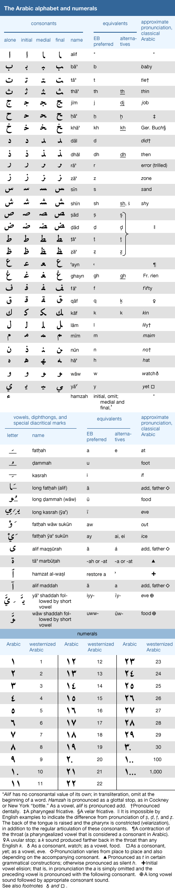
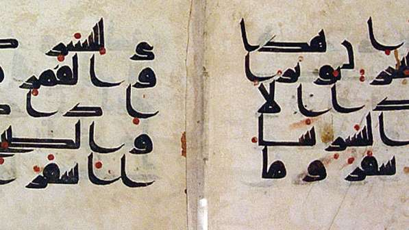

Arabic Alphabets
Arabic alphabet, second most widely used alphabetic writing system in the world (the Latin alphabet is the most widespread). Originally developed for writing the Arabic language and carried across much of the Eastern Hemisphere by the spread of Islam, the Arabic script has been adapted to such diverse languages as Persian, Turkish, Spanish, and Swahili. Although it probably developed in the 4th century CE as a direct descendant of the Nabataean alphabet, its origins and early history are vague. Some scholars believe that the earliest extant example of Arabic script is a royal funerary inscription of the Nabataeans dating from 328 CE. Others believe that this epigraph shows characteristics of Arabic but is essentially Aramaic and that the earliest extant example of Arabic is a trilingual inscription in Greek, Syriac, and Arabic dating from 512 CE.

The Arabic alphabet has 28 letters, all representing consonants, and is written from right to left. It is descended ultimately from the North Semitic alphabet, like its contemporary Aramaic and Greek scripts, but was adapted to fit the broader phonology of the Arabic language and to a cursive style well suited for writing with pen and paper. The shape of each letter depends on its position in a word—initial, medial, and final. There is a fourth form of the letter when it is written alone. The letters ālif, wāw, and yā (standing for glottal stop, w, and y, respectively) are used to represent the long vowels a, u, and i. A set of diacritical marks developed in the 8th century CE are sometimes used to represent short vowels and certain grammatical endings otherwise left unmarked.
Two major types of Arabic script existed early on. Kūfic, a thick, bold, monumental style, was developed in Kūfah, a city in Iraq, toward the end of the 7th century CE. It was used chiefly for inscriptions in stone and metal but was also employed sometimes to write manuscripts of the Qurʾān. A very handsome monumental script, it has passed out of use, except in cases in which more cursive scripts cannot be used. Naskhī, a flowing script well adapted to writing on papyrus or paper, is the direct ancestor of modern Arabic writing. It originated in Mecca and Medina at an early date and exists in many complex and decorative variant forms.

Additional styles developed from these as the alphabet was employed for a wider range of communicative tasks. The Thuluth and Maghribi styles, for instance, offered a method of ornamentation more easily handwritten than Kūfic. The Dīwānī style was likewise adapted by the Ottomans for the ornamentation of official documents. The renaissance of the Persian language in the 9th century, meanwhile, led to the Taʿlīq style, which was adapted to meet the needs of Persian spelling. Its descendant, the Nastaʿlīq script, remained the primary style of writing for Persian, Dari, Pashto, and Urdu in modern times.